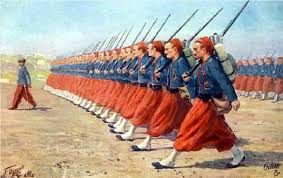
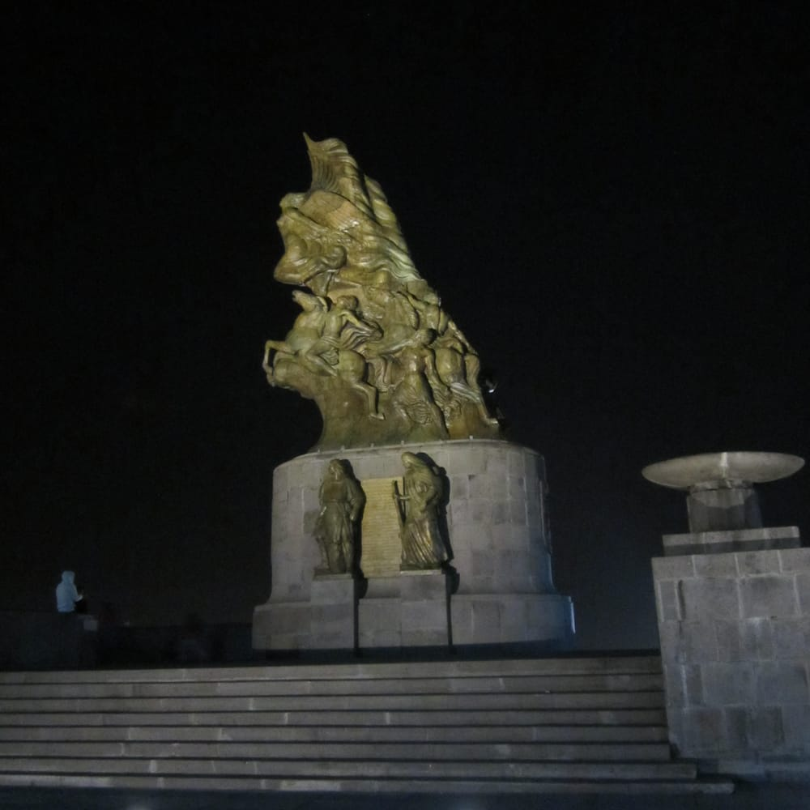
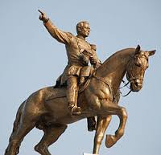
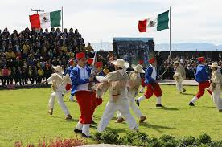
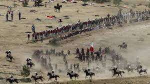

La Batalla de Atlixco tuvo lugar el 4 de mayo de 1862 en las inmediaciones de la Hacienda de las Traperas en Atlixco en el estado de Puebla, Mexico, entre elementos del ejército mexicano de la república, al mando de los generales Antonio Carvajal y Tómas O'Horan contra las tropas al servicio del Segundo Imperio Mexicano comandadas por el general Jose Maria Cobos y de Leonardo Marquez, compuesta de soldados conservadores mexicanos en apoyo de envío de refuerzos para llevar a cabo la Batalla de Puebla, durante la Segunda Intervencion Francesa en México

Esta batalla culminó con una victoria republicana y debido a esto el grupo conservador de Márquez no pudo lograr su objetivo de auxiliar a las tropas francesas del Conde de Lorenzes en la batalla de Puebla.
Pero si todos los mexicanos sabemos lo anterior, considero, en cambio, que sólo muy pocos saben que l a brillante victoria de aquel dí a pudo ser alcanzada por el general Zaragoza, no sólo por el valor desplegado por las tropas que tenía bajo su mando inmediato y por las excelentes y atinadas disposiciones que dictó en el curso del combate, sino también, y muy particularmente, porque otras tropas mexicanas, pertenecientes al mismo Cuerpo de Ejército de Oriente, el dí a 4 anterior obtuvieron una señalada victoria en las cercanías del pueblo de Atlixco

A principios de 1862, México fue invadido por los franceses. Unos meses antes, en junio de 1861, el Congreso mexicano – a iniciativa del Presidente Benito Juárez – había declarado la suspensión por un lapso de dos años del pago de la deuda internacional, debido a que la economía del país estaba prácticamente en bancarrota a raíz de la Guerra de Reforma (1857-1860).
Aunque Inglaterra, España y Francia protestaron contra la medida, los dos primeros llegaron a un acuerdo con los diplomáticos mexicanos. En cambio, Napoleón III, gobernante de Francia, vio en ésta, la oportunidad de extender su imperio en América y decidió invadir México. En abril de 1862 (con el apoyo de los conservadores) los franceses emprendieron, desde Córdoba, Veracruz, la campaña militar hacia el centro de la República. La primera batalla importante tuvo lugar en Acultzingo, Veracruz, y el siguiente lugar en la ruta a la capital era la ciudad de Puebla.
Este material cuenta con derechos de propiedad intelectual. De no existir previa autorización por escrito de EL UNIVERSAL, Compañía Periodística Nacional S. A. de C. V., queda expresamente prohibida la publicación, retransmisión, distribución, venta, edición y cualquier otro uso de los contenidos (Incluyendo, pero no limitado a, contenido, texto, fotografías, audios, videos y logotipos). Si desea hacer uso de este contenido por favor comuníquese a la Agencia de Noticias de El Universal, al 57091313 extensión 2425. Muchas gracias.Otros generales mexicanos también participaron en la defensa de Puebla como es el caso de las tropas de Oaxaca dirigidas por Porfirio Díaz. El centro de la línea lo defendió Francisco Lamadrid con las tropas del Estado de México y San Luis Potosí. La izquierda se apoyó en el cerro de Acueyametepec ubicado en el norte de la ciudad y en cuya cumbre se ubicaban los Fuertes de Loreto y Guadalupe, con el general Miguel Negrete a la cabeza de la Segunda División de Infantería.

El 5 de mayo a las 9:15am aparecen los franceses en el horizonte pero no es sino hasta las 11:15am cuando comienzan las hostilidades anunciándose con un cañonazo desde el Fuerte de Guadalupe y acompañado por los repiques de las campanas de la ciudad.
PUEBLA Trabajadores del gobierno de Puebla empezaron a desmontar los más de seis mil 700 metros de madera de supuesto origen finlandés que cubrían el Monumento Emblemático por el 150 Aniversario de la Batalla de Puebla, inaugurado hace menos de cinco años por el mandatario Rafael Moreno Valle

El Monumento a la Victoria (5 de mayo) fue hecha por el escultor y pintor mexicano Ernesto Tamariz.Recibe su nombre debido a que aquí el ejercito mexicano libró una poderosa batalla contra el ejercito francés, durante la Segunda Intervención Francesa el 5 de mayo de 1862.
 

Ignacio Zaragoza, Ministro de Guerra y militar que dirigió el Ejército Mexicano, quienes, acompañados por un grupo de indígenas -conocidos erróneamente como zacapoaxtlas- se rebelaron en las afueras de la ciudad de Puebla contra las tropas francesas, dirigidas por el conde de Lorencez, Charles Ferdinand Latrille, durante la Segunda Intervención Francesa en México.

Miguel Negrete Novoa fue un general militar nacido el 8 de mayo de 1824 en Tepeaca, Puebla; es considerado el principal héroe de la batalla del 5 de mayo de 1862 después del General Ignacio Zaragoza.
Para este momento, la derecha de la línea de batalla mexicana la cerró Porfirio Díaz con la División de Oaxaca, auxiliado por los escuadrones de Lanceros de Toluca y Oaxaca.Porfirio Díaz acudió en auxilio de los Rifleros de San Luis Potosí, que estaban a punto de ser rodeados.
El 5 de mayo representa, sin lugar a duda, una de las fechas más emblemáticas de la historia de nuestro país, pieza clave del orgullo nacional y una de las principales fuentes que nutren el patriotismo mexicano. La ciudad y el estado de Puebla guardan hoy, con orgullo, el recuerdo de haber sido en su territorio donde el ejército mexicano, al mando del general Ignacio Zaragoza, derrotó y detuvo el avance del invasor francés en 1862; reafirmando la soberanía e independencia de México frente al que era, en ese momento, el ejército más poderoso del mundo. Es aquí donde las armas nacionales se han cubierto de gloria. Este material cuenta con derechos de propiedad intelectual. De no existir previa autorización por escrito de EL UNIVERSAL, Compañía Periodística Nacional S. A. de C. V., queda expresamente prohibida la publicación, retransmisión, distribución, venta, edición y cualquier otro uso de los contenidos (Incluyendo, pero no limitado a, contenido, texto, fotografías, audios, videos y logotipos). Si desea hacer uso de este contenido por favor comuníquese a la Agencia de Noticias de El Universal, al 57091313 extensión 2425. Muchas gracias.  


 5
5 6
6